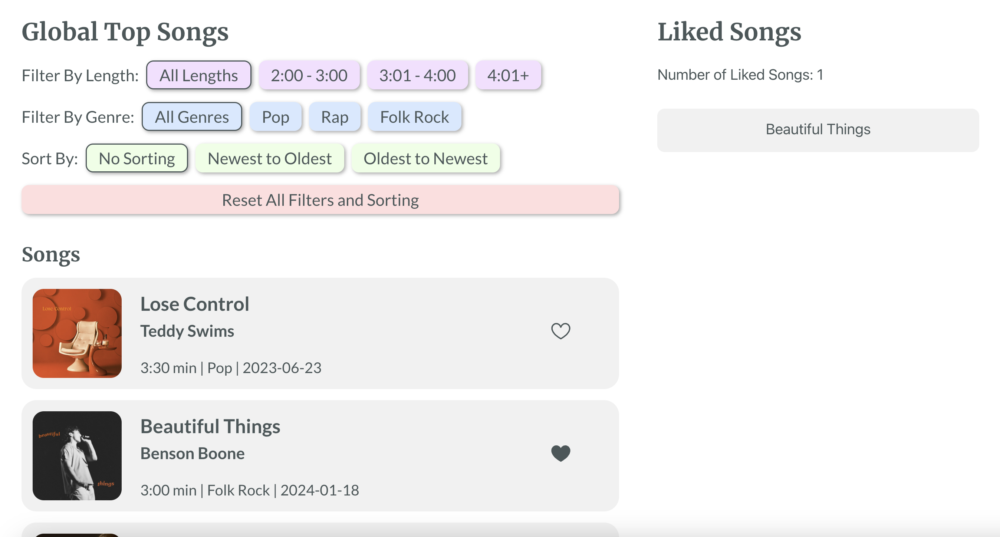

Development Assignment
Overview
In this assignment, I used React to build an interactive music-related interface with filter, sort and aggregation capabilities. In addition, I practiced conducting a competitive analysis that compares websites with different favoriting features, thus forming the foundation for my own implementation.
Competitive Analysis
The competitive analysis examines the favoritng function of Pinterest, the New York Times and Spotify. The red boxes highlight how one can favorite and unfavorite an element as well as how the favorites are displayed for each website.


Competitive Comparison Chart
In summary, doing this competitive analysis was useful to understand what features were most and least successful.
Takeaways
Drawing inspiration from my competitive analysis, the features that I attempted to implement included:
- Button for every element to add and remove from aggregated
- Button filled in when element in aggregator
- Songs in aggregator based on when they were liked (most recently liked first)
Implementation
My app allows users to explore global top songs through filtering by song length and genre as well as sorting by release date. Users can like songs, which will aggregate in the Liked Songs section of the interface, which also displays a total of how many songs are liked.
Access my app here! I really enjoyed completing this assignment becase I had not previously used React to build an interface with filtering and sorting. In addition, I now have a stronger understanding of components and states in React.